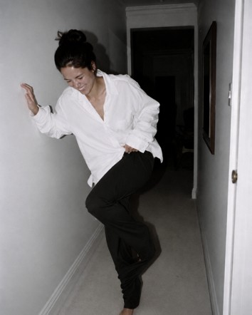

Creative Design Agency.
Amsterdam

We're still getting ready…
Nothing exquisite has
ever arrived
punctually. What is
being made here is
being made thoroughly,
in the manner of light,
or reputation, or ruin;
and those who can
bear the waiting are, as
a rule, the only ones
worth showing it to.
Need help now?